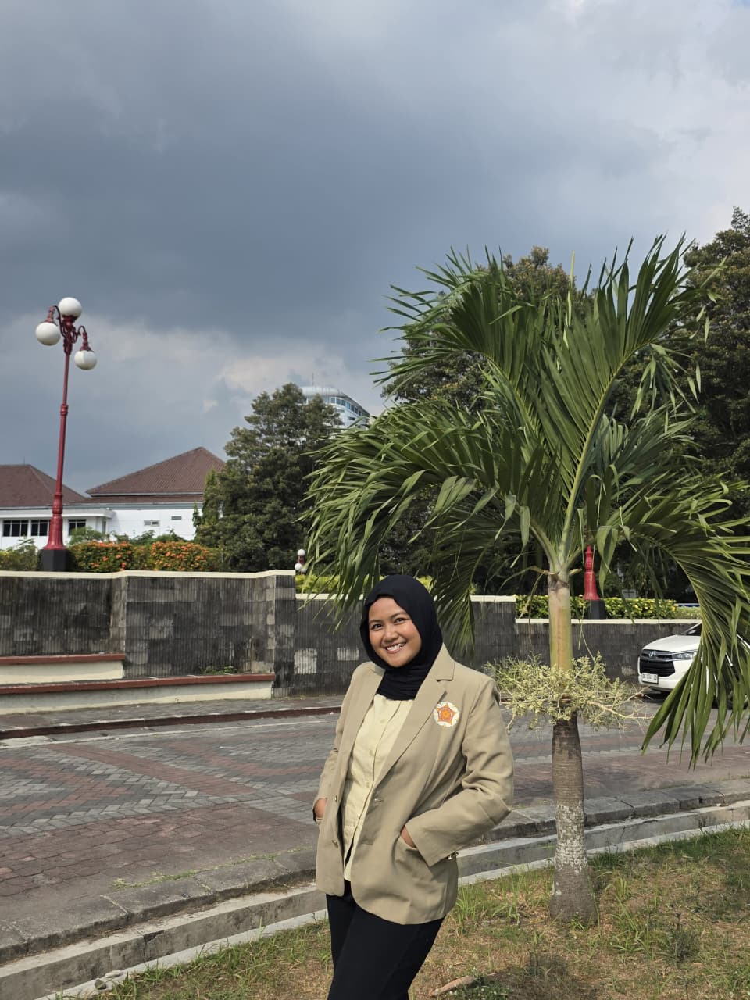

Selamat Datang di Websiteku!
Mahasiswa Teknologi Rekayasa Elektro Universitas Gadjah Mada yang memiliki ketertarikan pada bidang energi terbarukan.

Learning, growing, and exploring.
01 / TENTANG SAYA
Halo! Aku Zahra, mahasiswa tahun pertama di Sekolah Vokasi Universitas Gadjah Mada, Program Studi Teknologi Rekayasa Elektro. Saat ini aku sedang menjalani proses mengenal lebih dalam dunia kelistrikan, elektronika, dan pemrograman dasar.
Aku tertarik mempelajari salah satu bidang teknologi yaitu bidang energi terbarukan, karena menurut saya pengembangan teknologi energi memiliki peran penting untuk masa depan. Selain belajar di perkuliahan, aku ingin mengembangkan kemampuan melalui kegiatan organisasi, kerja sama tim, dan berbagai pengalaman baru.
02 / PENDIDIKAN
Perjalanan pendidikan yang menjadi bagian dari prosesku untuk terus belajar.
Sarjana Terapan Teknologi Rekayasa Elektro, Departemen Teknik Elektro dan Informatika (DTEDI), Sekolah Vokasi Universitas Gadjah Mada.
Peminatan Ilmu Pengetahuan Alam
03 / KETERAMPILAN DAN MINAT
Kemampuan teknis dan kemampuan diri yang terus kukembangkan selama proses belajar.
Kemampuan teknis yang sedang saya pelajari dalam bidang kelistrikan, dan pemrograman.
Mampu mengoperasikan alat ukur listrik seperti multimeter digital dan tang ampere untuk pengukuran listrik dasar.
Membuat flowchart menggunakan draw.io untuk membantu memahami alur penyelesaian suatu masalah.
Mempelajari dasar Python menggunakan Google Colab, termasuk perulangan, percabangan, dan penyelesaian masalah sederhana.
Kemampuan diri yang kukembangkan melalui pembelajaran, organisasi, dan kerja sama.
Belajar bekerja sama, berdiskusi, dan menyelesaikan tugas bersama dengan anggota tim.
Terampil dalam mengatur waktu, menyelesaikan tugas tepat waktu, serta bertanggung jawab dan konsisten
Cepat mempelajari hal baru dan mudah beradaptasi dengan lingkungan baru.
Mampu menganalisis masalah dan menemukan solusi yang efektif.
Mampu menyampaikan konsep teknis secara jelas, efektif, dan mudah dipahami.
04 / ORGANISASI & PENGALAMAN
Pengalaman dan proses belajar yang menjadi bagian dari perjalananku saat ini.
Departemen Minat dan Bakat — Staff
Bergabung dalam organisasi mahasiswa dan mulai terlibat dalam kegiatan departemen, termasuk persiapan program kerja Sparing Ormada. Pengalaman ini menjadi kesempatan untuk belajar bekerja sama dan berkontribusi dalam kegiatan organisasi.
Divisi Ekonomi Kreatif
Mengikuti kegiatan organisasi pada divisi ekonomi kreatif dan mengenal kegiatan dana usaha. Pengalaman ini membantu mengembangkan rasa tanggung jawab, komunikasi, dan kerja sama.
Member
Organisasi yang berfokus pada pelestarian lingkungan, penjelajahan alam, serta pengembangan jiwa kepemimpinan, kerja sama tim, dan keterampilan bertahan hidup melalui kegiatan di alam.
05 / KONTAK
Saya terbuka untuk belajar, bertukar ide, dan mengenal pengalaman baru bersama orang lain. Terima kasih sudah meluangkan waktu untuk mengunjungi website profilku!